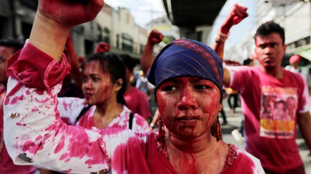

Declaración sobre la violación de los derechos humanos y la ruptura del orden democrático en Venezuela
Facebook LinkedIn TwitterCompartir en redes sociales:
Martes 17 de julio de 2018
Información para la Prensa N°:
294/18
Los gobiernos de Argentina, Chile, Colombia, Costa Rica, Guatemala, Honduras, México, Panamá, Paraguay y Perú, países miembros del Grupo de Lima, ante la profunda crisis política, económica, social y humanitaria en la República Bolivariana de Venezuela:

- Condenan la ruptura del orden constitucional y del Estado de derecho en la República Bolivariana de Venezuela, reflejada en la pérdida de instituciones democráticas y la falta de garantías y libertades políticas para todos los ciudadanos.
- No reconocen la legitimidad y credibilidad del proceso electoral desarrollado en ese país, que concluyó el 20 de mayo de 2018, por no cumplir con los estándares internacionales, no haber contado con la participación de todos los actores políticos venezolanos y haberse desarrollado sin las garantías necesarias para un proceso libre, justo, transparente y democrático
- Hacen un llamado a la instalación de un verdadero diálogo nacional en el que participen todos los actores políticos venezolanos para acordar la celebración de un nuevo proceso electoral que cuente con las garantías democráticas de justicia, libertad y transparencia.
- Expresan su profunda consternación y alarma por las graves violaciones a los derechos humanos en Venezuela, denunciadas en los informes y comunicados de la Comisión Interamericana de Derechos Humanos y registradas en el reciente Informe del Alto Comisionado de las Naciones Unidas para los Derechos Humanos, que incluyen ejecuciones extrajudiciales, uso excesivo de la fuerza, arrestos arbitrarios, tortura y malos tratos, y la falta de acceso a la justicia, así como la erosión de los controles y equilibrios institucionales y de la democracia en ese país.
- Expresan su profunda preocupación por informaciones recientes sobre movilización de armamento y aviones de combate por parte de Venezuela a la frontera con Colombia, acciones que se contradicen con el espíritu de la Proclama sobre América Latina como Zona de Paz aprobada en 2014 por la CELAC.
- Reiteramos el llamado urgente al gobierno de Venezuela para que permita el establecimiento de un canal humanitario que facilite brindar la atención inmediata que requieren los venezolanos que siguen atravesando la frontera en estados precarios de salud y desnutrición.
- Reconocen la reciente resolución de la Asamblea General de la Organización de los Estados Americanos que, ante la grave situación en ese país, busca apoyar el restablecimiento de la democracia en Venezuela, en el marco de la Carta Democrática Interamericana.
- Expresan su disposición a implementar, de conformidad con sus respectivos marcos legales y con el derecho internacional aplicable, medidas a nivel político, económico y financiero para coadyuvar al restablecimiento del orden democrático en Venezuela.
Ir arriba|
Volver a la página principal